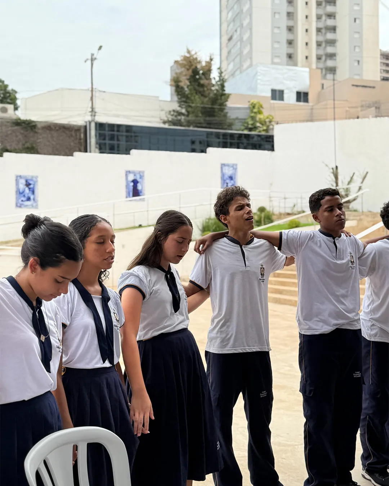
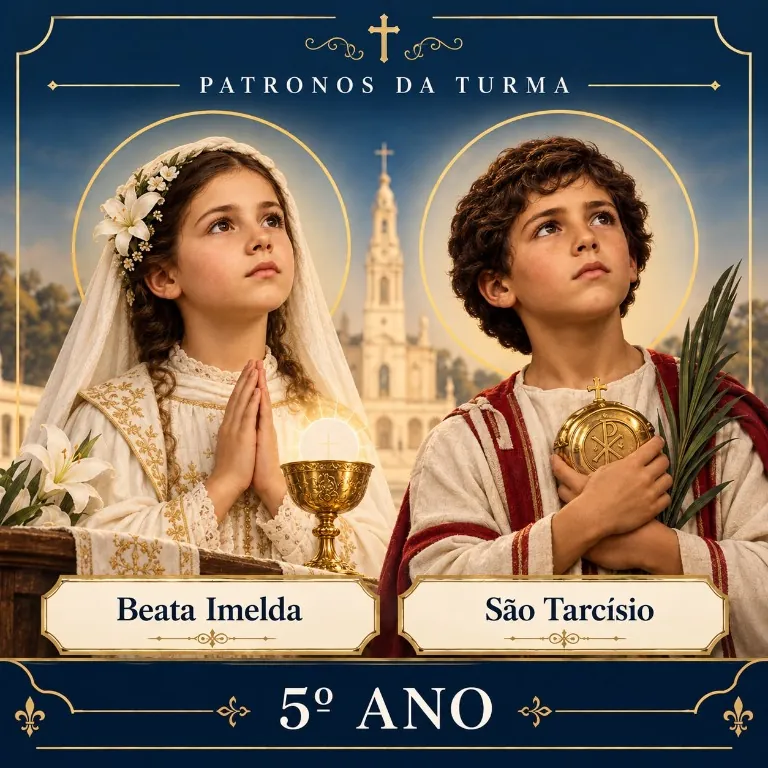
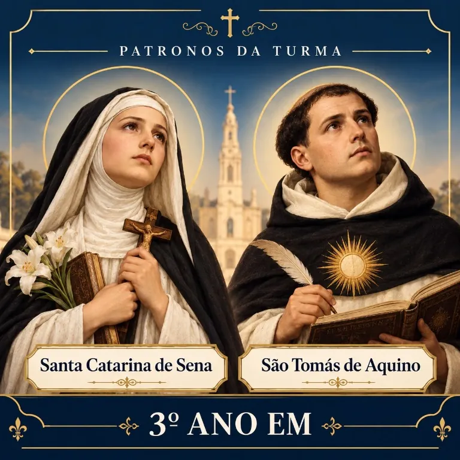
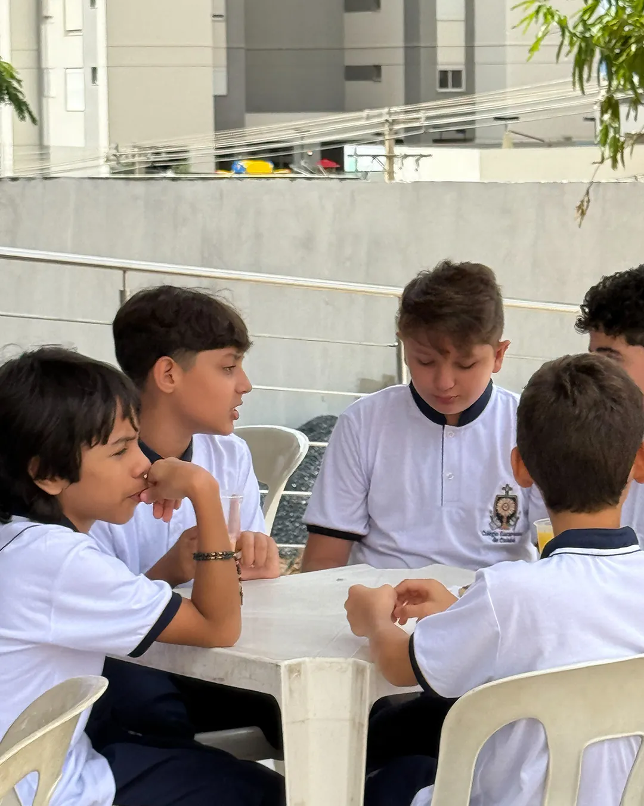
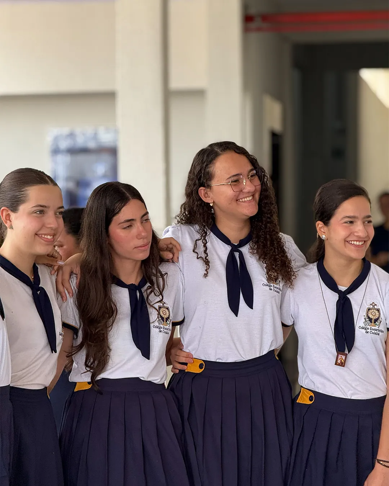
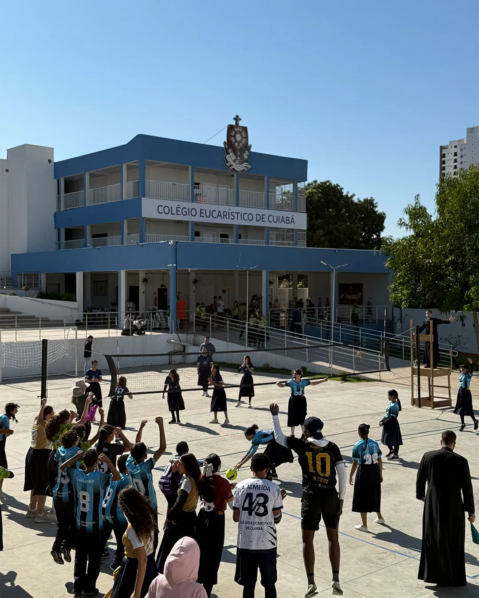
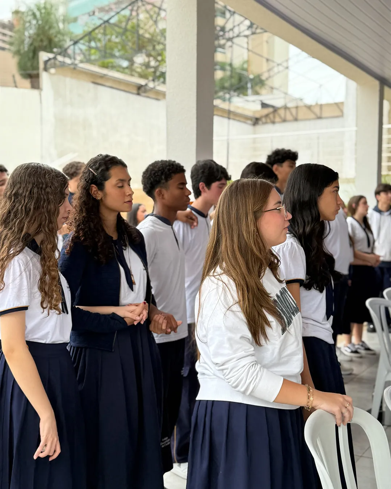

Formação Católica
Cristo no centro de tudo.

Conhecer, amar e servir
Do 5º ano do Ensino Fundamental
ao 3º ano do Ensino Médio.
Cristo no centro de tudo.
Conhecimento que transforma.
Do 5º ano ao 3º ano do Ensino Médio.
Uma escola a serviço da família.
Uma escola, uma grande família
Cada turma do Colégio Eucarístico de Cuiabá possui um casal de santos padroeiros,
que inspira e acompanha os alunos em sua jornada de formação.


Formação integral
Uma educação que une fé, conhecimento e virtude para formar jovens que sejam luz no mundo.
Educação para desenvolver o potencial humano, intelectual e espiritual de cada aluno, à luz do Evangelho.
Conheça nossa proposta


Sacramentos, oração e vida litúrgica como alicerces da nossa educação.
Ensino sólido, professores dedicados e altos resultados.
Virtudes, caráter e serviço para nossos alunos serem protagonistas.
Por que escolher o CEC?
Ambiente seguro
e familiar
Método pedagógico
comprovado
Acompanhamento
individual do aluno
Tradição católica
e comunidade viva
Mais que uma escola
Aprendizagem, amizade, fé e serviço
em uma experiência transformadora.
Frutos da formação
Alunos do Colégio que conquistaram sua vaga no ensino superior.
Tire suas dúvidas
Atendemos do 5º ano do Ensino Fundamental ao 3º ano do Ensino Médio.
As matrículas 2027 estão abertas. Fale com a nossa secretaria pelo WhatsApp (65) 99936-4922 ou pelo celular (65) 99936-4922 e receba toda a orientação.
Uma educação que une fé, conhecimento e virtude, à luz do Evangelho, para desenvolver o potencial humano, intelectual e espiritual de cada aluno.
Cada turma possui um casal de santos padroeiros, que inspira e acompanha os alunos em sua jornada de formação.
Esses detalhes são passados diretamente pela secretaria. Basta chamar pelo WhatsApp ou preencher o formulário abaixo que retornamos o contato.
Claro! Entre em contato com a secretaria pelo WhatsApp ou celular para combinar uma visita.
Fale com a secretaria
Deixe seus dados e continue a conversa pelo WhatsApp com a nossa equipe.

Matrículas 2027 abertas
Mais que uma escola, um caminho de formação para a vida inteira.
Venha fazer parte desta história.
“A santidade não é um luxo para poucos, mas é a vocação para todos.”São João Paulo II